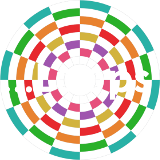

Get ready for your instrument
Check following boxes
to Play an instrument (if one is available)
to Display step sequence playhead
Tips:
- Are you using a smartphone?
- Rotate your device as in "landscape" mode
- Having an issue?
- Refresh Webpage
- Use Google Chrome browser
